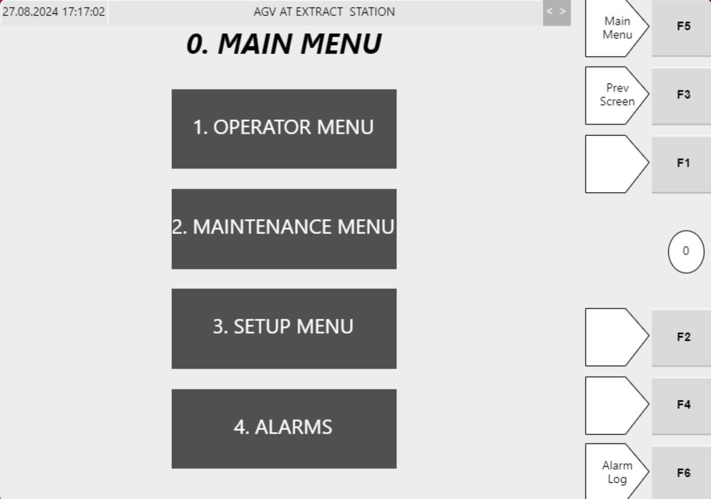

| Procedure ID | proc_navigate_from_the_hospital_hmi_main_menu_to_available_menus_v1 |
|---|---|
| Title | Navigate From the Hospital HMI Main Menu to Available Menus |
| Procedure Type | operation |
| Primary Role | operator |
| Support Safe | Yes |
| Validation Status | needs_sme_review |
| Merge Status | source_finalized |
Use the Hospital HMI Main Menu and its documented right-side function keys to open available menus for Hospital Station tote handling. The source identifies access to Operator Menu, Maintenance Menu, and Alarms from the Main Menu, and documents quick-access mappings for F1 through F6.
Use when an operator needs to navigate on the Hospital HMI from the Main Menu to one of the documented menus using the on-screen menu options or the right-side quick-access function keys.
Responsible role: operator
Instruction:
Open or view the Hospital Station Main Menu on the HMI.
Expected result:
The Hospital HMI Main Menu is displayed.
Screens / Images:

Stop or Escalate If:
Responsible role: operator
Instruction:
Identify the available destination menus listed from the Main Menu: Operator Menu, Maintenance Menu, and Alarms.
Expected result:
The operator recognizes the documented destination menus available from the Main Menu.
Screens / Images:
Stop or Escalate If:
Responsible role: operator
Instruction:
Use the right-hand quick-access buttons as documented to navigate: press F1 for Operator menu, F2 for Maintenance menu, or F6 for Alarms.
Expected result:
The selected menu opens from the Main Menu.
Screens / Images:
Stop or Escalate If:
Responsible role: operator
Instruction:
If needed for navigation, use F5 for Main menu or F3 for Previous screen as documented.
Expected result:
The HMI returns to the Main Menu or the previous screen as selected.
Screens / Images:
Stop or Escalate If:
Responsible role: operator
Instruction:
If Setup menu access is needed from the quick-access controls, use F4 as listed in Table 4-12.
Expected result:
The Setup menu is opened using the documented quick-access key.
Screens / Images:
Stop or Escalate If: